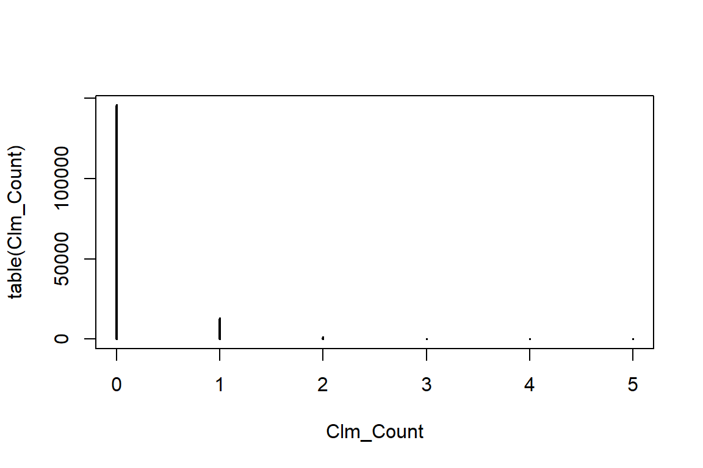
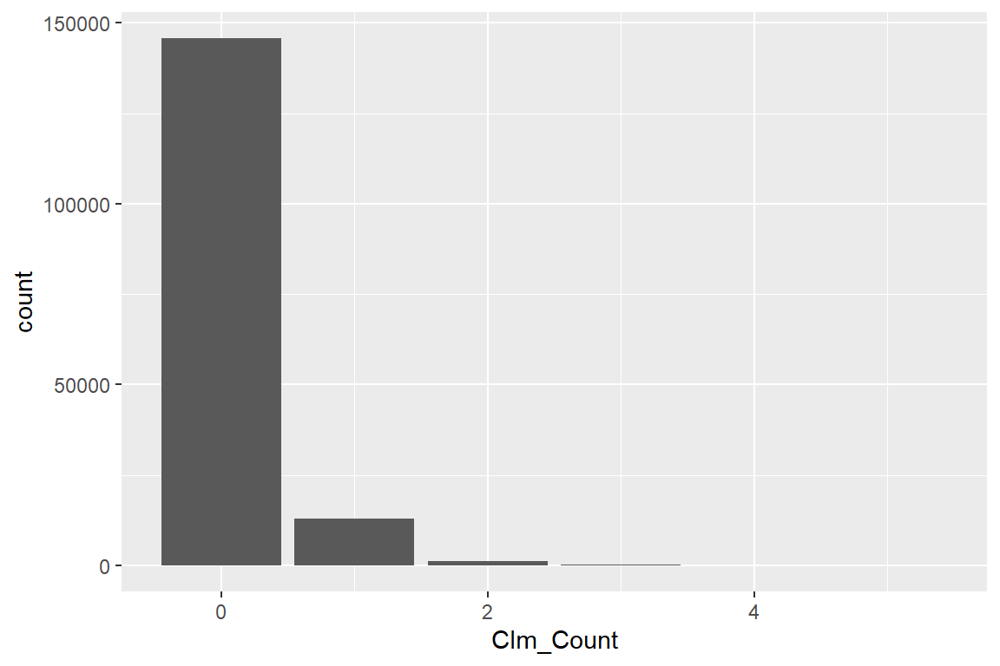
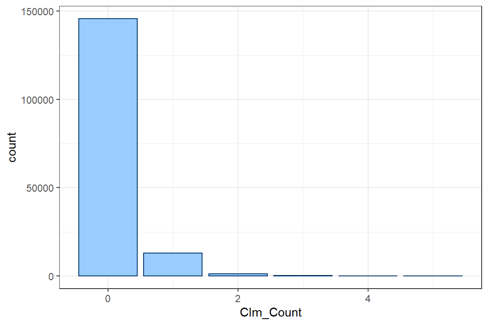
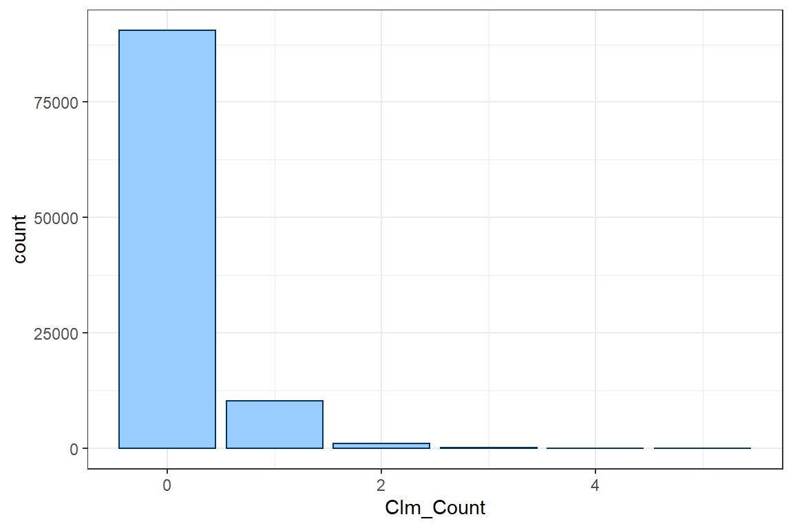
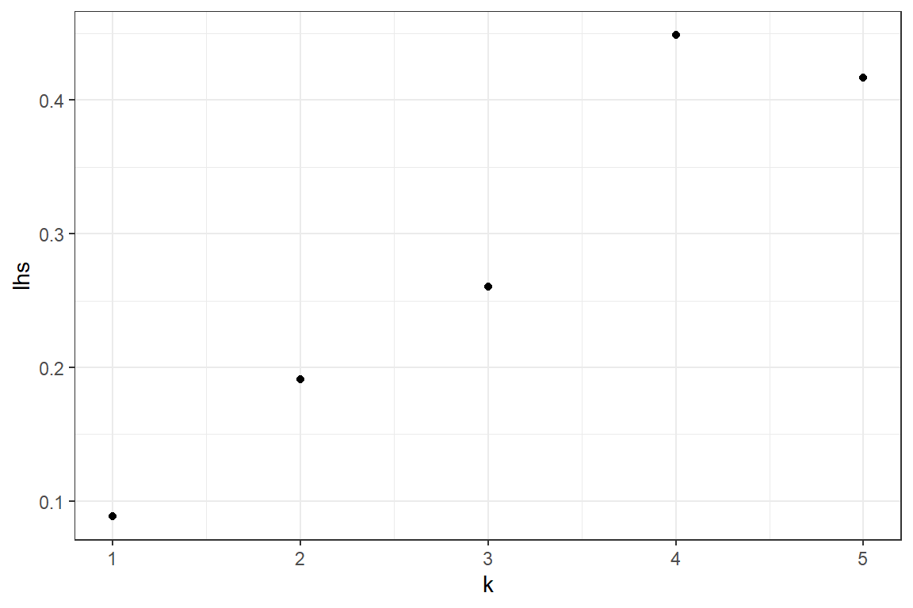
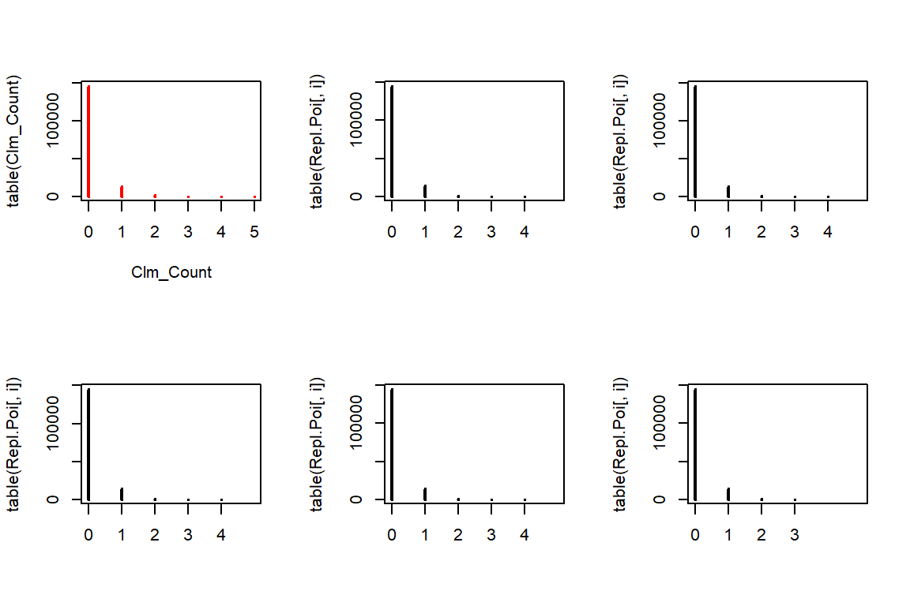

4 Putting it all together: case study on modelling claim counts
In this tutorial you will import a data set with the number of claims registered on a group of policyholders during one year. You will look for a suitable discrete distribution to model this data set. Hereto you will fit the Poisson, the Negative Binomial, the Zero-Inflated and the Hurdle Poisson to the data, while estimating the parameters used by these distributions with Maximum Likelihood Estimation. As a final step, you will compare the different model fits and select the best fitting parametric distribution.
4.1 Read in data
Importing data is often the first step in any analysis. In this tutorial the data is stored in the file NonFleetCo507Final.txt, which is located in a local subdirectory data. Check out chapter 4 of Data science in insurance: an R intro for a detailed overview of the R methods for importing data.
4.1.1 Determining the file path
Before we can import the data, we should first determine the exact file path where the data are located. R offers several methods for this task.
file.choose()
file.choose() opens an interactive prompt, which allows you to manually select the location of the file. Once selected R prints the aboslute path to the file in the console.
file.choose()"C:\Users\u0110176\Dropbox\Verzekeringen niet-leven\Bookdown\data\NonFleetCo507Final.txt"# Store the path in a variable for later use.
path <- "C:\\Users\\u0110176\\Dropbox\\Verzekeringen niet-leven\\Bookdown\\data\\NonFleetCo507Final.txt"setwd(<path>)
setwd(<path>) specifies the working directory of the current R session to <path>. Once set all files in the working directory can be referenced by relative paths.
# This is the map containing all files for the tutorial
setwd("C:\\Users\\u0110176\\Dropbox\\Verzekeringen niet-leven\\Bookdown\\")
# This is a relative path from the working directory to the file we want to import
path <- "data\\NonFleetCo507Final.txt"- Additional methods for
RStudio
RStudio offers two additional methods for setting the working directory to the location of the current R file.
Method 1: In the menu click Session -> Set Working Directory -> To Source File Location.
Method 2: Run the following code in the R console
dir <- dirname(rstudioapi::getActiveDocumentContext()$path)
setwd(dir)
path <- "data\\NonFleetCo507Final.txt"The advantage of these methods is that the working directory is automatically updated when the file is moved.
4.1.2 Importing a .txt file
After obtaining the file path, we read in the txt file using read.table. We specify the following options:
header = TRUE: The first row of the file contains the variable names.sep = \t: A tab splits the records in the text file.
NonFleet <- read.table(file = path, header = TRUE, sep = '\t')The data is now imported in the data.frame NonFleet. head(<data.frame>) prints the first records of a data.frame. This is a good first check to see whether the data was imported correctly.
# Show the first records of the imported data set
head(NonFleet) AgeInsured SexInsured Experience TLength Clm_Count VAge PrivateCar NCD_0
1 32 M 11 0.4654 0 10 1 0
2 26 M 5 0.8077 0 13 1 1
3 32 M 5 0.3997 0 0 1 0
4 32 M 5 0.5832 0 1 1 0
5 41 M 14 0.7748 0 9 1 0
6 28 F 3 0.4928 0 0 1 1
Cover_C VehCapCubic VehCapTonn
1 1 1797 0
2 0 1590 0
3 1 1997 0
4 1 1997 0
5 0 1597 0
6 1 1587 0Everything looks good. In this tutorial we focus on the variables:
Clm_Count: Number of claims for the policyholder;TLength: Fraction of the year that the policyholder was insured. In insurance this is often called the exposure.
We create separate variables in R to store these covariates
Clm_Count <- NonFleet$Clm_Count;
TLength <- NonFleet$TLength;4.2 Exploratory analysis
We now explore the available data and analyze the number of claim counts per insured.
4.2.1 Summary statistics disregarding exposure
We start our analysis by computing the mean and variance of the number of observed claims. If we denote by \(n_i\) the number of claims observed for policyholder \(i\), we can compute the mean and variance as
\[ \mu = E(X) = \frac{1}{m} \cdot \sum_{i=1}^m n_i\]
and
\[ \sigma^2 = E((X - \mu)^2) = \frac{1}{m} \cdot \sum_{i=1}^m (n_i - \mu)^2. \]
In these formulas \(m\) denotes the number of observations.
m <- length(Clm_Count)
mu <- sum(Clm_Count) / m
var <- sum((Clm_Count - mu)^2) / m
c(mean = mu,
variance = var) mean variance
0.09848 0.10925 4.2.2 Summary statistics taking into account exposure
The previous calculation of the mean and variance does not consider the difference in exposure between policyholders. However, it is important to take exposure into account. Let \(d_i\) be the exposure for policyholder \(i\), then we calculate the mean as
\[ \mu_{\text{exp}} = \sum_{i=1}^m \frac{d_i}{\sum_{i=1}^m d_i} \frac{n_i}{d_i} = \frac{\sum_{i=1}^m n_i}{\sum_{i=1}^m d_i}\] and the variance as \[ \sigma^2_{\text{exp}}=\frac{\sum_{i=1}^m(n_i-\mu_{exp} \cdot d_i)^2}{\sum_{i=1}^m d_i} . \] For more intuition behind these estimators, check out the blog of Arthur Charpentier and Section 15.6.6 from Klugman et al..
mu <- sum(Clm_Count) / sum(TLength);
var <- sum((Clm_Count-mu*TLength)^2)/sum(TLength)
c(mean = mu,
variance = var) mean variance
0.1546 0.1675 This is the expected number of accidents for a policyholder who is insurerd throughout the whole year, i.e. \(d_i = 1\).
4.2.3 Empirical probability distribution
table allows us to easily construct a contingency table of the counts.
table(Clm_Count)Clm_Count
0 1 2 3 4 5
145683 12910 1234 107 12 1 R can plot this table
plot(table(Clm_Count))
prop.table can be used to obtain the empirical probability distribution
prop.table(table(Clm_Count))Clm_Count
0 1 2 3 4 5
9.108e-01 8.071e-02 7.715e-03 6.690e-04 7.502e-05 6.252e-06 We can create a better barplot using ggplot
ggplot(): starts the construction of a ggplot figure;geom_bar(...): creates a bar plot;aes(<var>): specifies the variables used to create the plot.
# Run the following line of code when the package ggplot2 is not yet installed.
# install.package(ggplot2)
# Load the package ggplot2
library(ggplot2)
ggplot() +
geom_bar(aes(Clm_Count))
To specify your own theme, you define some visualisation parameters and colors that will be used in your ggplot calls.
col <- "#003366"
fill <- "#99CCFF"Instead of manually changing all details of the plot, ggplot also offers some general layout schemes. In this tutorial we use the black and white theme theme_bw().
ggplot() +
geom_bar(aes(Clm_Count), col = col, fill = fill) +
theme_bw()
The weight argument in aes allows you to weight the number of policyholders who file 0 claims, 1 claim and so on by exposure instead of simply counting the number of policyholders.
ggplot() +
geom_bar(aes(Clm_Count, weight = TLength), col = col, fill = fill) +
theme_bw()
You should check ggplot2 barplot to learn more. https://ggplot2.tidyverse.org/reference/geom_bar.html
4.2.4 The (a, b, 0) class of distributions
We test whether the data could come from a distribution in the (a, b, 0) class of distributions. Distributions in this family satisfy \[ \frac{k \cdot p_k}{p_{k-1}} = a \cdot k+ b, \quad k = 1,\ldots,\infty \]
geom_point: adds a scatterplot to ggplot. Two variables have to be specified inaes.xlab: specifies the name of the label on the x-axis.
# We first determine the empirical probabilities p_k
p <- as.numeric(table(Clm_Count) / length(Clm_Count))
# We calculate the left hand side (lhs) of the relation above
lhs <- (1:(length(p)-1)) * p[2:length(p)] / p[1:(length(p)-1)]
ggplot() +
geom_point(aes(x = 1:(length(p)-1), y = lhs)) +
xlab('k') +
ylab('lhs') +
theme_bw()
You should check ggplot2 geom_point to learn more. https://ggplot2.tidyverse.org/reference/geom_point.html
The observations \((k, \frac{k \cdot p_k}{p_{k-1}})\) seem to be on a straight line with positive intercept. This indicates that the Negative Binomial distribution might be a good fit for the data.
4.3 Fitting count distributions
We fit several count distributions to the observed claim count data:
- Poisson
- Negative binomial (NB)
- Modified Poisson distributions
We do not consider the explanatory variables, but take the exposure into account. We fit these distributions using Maximum Likelihood Estimation (MLE).
4.3.1 Poisson
For a Poisson distribution with intensity \(\lambda\) the probability of observing \(k\) events is given by
\[ P(N = k) = \exp(-\lambda) \frac{\lambda^k}{k!}.\]
The expected value of the poisson distribution is
\[ E(N) = \lambda. \]
Not all policyholders are insured throughout the whole year (\(d_i = 1\)) and obviously policyholders who are only at risk for a small fraction of the year are less likely to experience a claim. We assume that the claim intensity is proportional to the exposure, i.e.
\[ N_i \sim \text{POI}(d_i \cdot \lambda),\]
such that the expected value scales with exposure
\[ E(N_i) = d_i \cdot \lambda.\]
We then interpret \(\lambda\) as the expected number of claims for a policyholder who was insured throughout the whole year.
Let \(m\) be the number of observations and \(n_i\) be the observed number of claims for policyholder \(i\), then the likelihood is given by
\[ \mathcal{L}(\lambda) = \prod_{i=1}^m P(N_i = n_i) = \prod_{i=1}^m \exp(-\lambda \cdot d_i) \cdot \frac{(\lambda \cdot d_i)^{n_i}}{n_i!}\]
and the loglikelihood is
\[ \ell(\lambda) = \sum_{i=1}^m -\lambda \cdot d_i + n_i \cdot \log(\lambda \cdot d_i) - \log(n_i !).\]
We want to maximize this loglikelihood with respect to \(\lambda\). We define a function poisson.loglikelihood which returns the loglikelihood as a function of \(\lambda\).
poisson.loglikelihood <- function(lambda)
{
loglikelihood <- sum(-lambda * TLength + Clm_Count * log(lambda * TLength) - lfactorial(Clm_Count))
return(loglikelihood)
}Unfortunately it is not possible to maximize this function directly in R. We make two small adjustments
We will use the
nlm(non-linear minimizer) function inRfor finding the maximum likelihood parameter \(\hat{\lambda}\). Because,nlmis used to minimize a function, we change the routine to return the negative loglikelihood (\(-\ell(\lambda)\)). Minmizing the negative loglikelihood is equivalent to maximizing the loglikelihood.The parameter \(\lambda\) is restricted to positive values. The built-in algorithms in R look for parameters in the unrestricted domain \((-\infty, \infty)\). We reparametrize the likelihood and optimize for \(\beta = \log(\lambda)\), which can take values in \((-\infty, \infty)\).
poisson.negLoglikelihood <- function(beta)
{
lambda = exp(beta)
return(-poisson.loglikelihood(lambda))
}We use the non-linear minimization function nlm to carry out the minimization. This routine requires a starting value for \(\beta\), which is here simply set to 0. The function returns a list containing the following output (check the help page ?nlm for more details):
- minimum: the value of the estimated minimum of f.
- estimate: the point at which the minimum value of f is obtained.
- gradient: the gradient (first derivative) at the estimated minimum of f. The gradient should be close to zero.
- hessian: the hessian (second derivative) at the estimated minimum of f. The hessian is used to determine confidence bounds for the parameters fitted through maximum likelihood.
- code: an integer indicating why the optimization process terminated. When
codeequals 1 or 2, the algorithm converged and the current estimate is probably the solution. Whencodeequals 3, 4 or 5 the algorithm has not converged. For more details see the help page of nlm (?nlm).
fit <- nlm(poisson.negLoglikelihood, 0, hessian = TRUE)Warning in nlm(poisson.negLoglikelihood, 0, hessian = TRUE): NA/Inf replaced by
maximum positive valuefit$minimum
[1] 50834
$estimate
[1] -1.867
$gradient
[1] 0.0003585
$hessian
[,1]
[1,] 15754
$code
[1] 1
$iterations
[1] 7# Store the fitted lambda value
poisson.lambda <- exp(fit$estimate)
# Store the minimal value found for the loglikelihood
poisson.loglik <- poisson.loglikelihood(poisson.lambda)The estmiate for \(\lambda\) is identical to the expected value \(\mu_{\text{exp}}\) we calculated earlier by taking exposure into account.
When we fit the data with maximum likelihood we obtain a point estimate \(\hat{\lambda}\) for the intensity of the Poisson process However, sometimes (e.g. when doing hypothesis testing) we also need a confidence interval for the actual parameter \(\lambda\). Under MLE we know that the actual parameters of the distribution are assymptoticaly distributed as (see Chapter 13 on Variance and interval estimation)
\[ \lambda \sim \mathcal{N}(\hat{\lambda}, \mathcal{I}^{-1}),\] where \(\mathcal{I}\) denotes the Fisher information matrix. You calculate this matrix as the negative of the Hessian, the matrix with the second order derivatives of the log-likelihood, evaluated in \(\hat{\beta}\).
# The standard error of the parameter estimate for beta is
beta.se = sqrt(solve(fit$hessian))You can now use the delta method (see Section 13.3 in the book) to construct a confidence interval for the unknown \(\lambda\). The MLE for \(\lambda\) is obtained from the transformation \(\hat{\lambda}=\exp \hat{\beta}\). The corresponding se is calculated as \(se_{\hat{\lambda}} = (\exp \hat{\beta})^2 \cdot \text{se}_{\hat{\beta}}\).
We can use this normal approximation to calculate a \(95\%\) confidence interval for the actual parameter \(\lambda\) as
\[ [\lambda - \Phi^{-1}(0.975) \cdot \sigma_{\lambda}, \lambda + \Phi^{-1}(0.975) \cdot \sigma_{\lambda}] \],
where \(\Phi\) is the CDF of the standard normal distributon and \(\sigma_{\lambda}\) is the standard error of the \(\lambda\) parameter.
# The standard error of the parameter estimate for lambda is
poisson.se = poisson.lambda^2 * beta.se;
# The 95% confidence interval for lambda is
c(poisson.lambda - qnorm(0.975) * poisson.se, poisson.lambda + qnorm(0.975) * poisson.se)[1] 0.1542 0.15494.3.2 Negative binomial
The probability function for the negative binomial distribution is given by
\[Pr(N=k) = \frac{\Gamma(a+k)}{\Gamma(a) k!}\left(\frac{\mu}{\mu+a}\right)^{k}\left(\frac{a}{\mu+a}\right)^{a}.\]
We take exposure into account and model \(\mu_i = d_i \cdot \mu\), where \(\mu\) is the expected number of claims for a policyholder who is insured for a full year. The likelihood now contains two parameters \(a\) and \(\mu\) which we have to optimize simultaneously. We define the negative loglikelihood
NB.negativeLoglikelihood <- function(beta)
{
mu <- exp(beta[1])
a <- exp(beta[2])
loglikelihood <- sum(lgamma(a + Clm_Count) - lgamma(a) - lfactorial(Clm_Count) + Clm_Count * log(mu*TLength/(mu*TLength + a)) + a * log(a / (mu * TLength + a)))
return(-loglikelihood)
}In this case it’s more important to supply good starting values for the convergence speed of the algorithm. For the Negative Binomial distribution \[ E(X) = \mu \quad \text{and} \quad Var(X) = \mu + \frac{1}{a} \cdot \mu^2.\] We match the first two moments and set
\[ \mu = E(X) \quad \text{and} \quad a = \frac{\mu^2}{Var(X) - \mu}.\]
mu.initial <- mu
a.initial <- mu^2 / (var - mu)
fit <- nlm(NB.negativeLoglikelihood, log(c(mu.initial, a.initial)),hessian=TRUE)
# Store the fitted values
nb.mu <- exp(fit$estimate[1])
nb.a <- exp(fit$estimate[2])
# Store the minimal value found for the loglikelihood
nb.loglik <- -fit$minimum4.3.3 Modified Poisson distributions
We consider two popular modifications of the Poisosn distribution, namely the Zero Inflated Poisson (ZIP) distribution and the Hurdle Poisson distribution.
4.3.3.1 Zero Inflated Poisson (ZIP)
The ZIP distribution is a Poisson distribution where the probability of having zero claims is increased by \(p\).
\[ P(N = k) = \begin{cases} p + (1-p) \cdot P(\tilde{N} = 0) & k = 0 \\ (1-p) \cdot P(\tilde{N} = k) & k > 0 \end{cases},\]
where \(\tilde{N}\) follows a Poisson distribution. The ZIP distribution is the mixture of a degnerate distribution in zero with weight \(p\) and a Poisson distribution with weight \(1-p\).
The parameter \(p\) can take values in \([0, 1]\), we transform the interval \([0, 1]\) to the real line \((-\infty, \infty)\) using the logit transform
\[ \text{logit}(p) = \log\left( \frac{p}{1-p} \right) = \beta. \]
Inverting this expression, we find
\[ p = \frac{\exp(\beta)}{ 1 + \exp(\beta) }.\]
ZIP.negativeLoglikelihood <- function(beta)
{
lambda <- exp(beta[1])
p <- exp(beta[2])/(1+exp(beta[2]))
density <- (p + (1-p) * exp(-TLength * lambda))^(Clm_Count == 0) * ((1-p) * exp(-TLength * lambda) * (TLength *lambda)^Clm_Count / gamma(Clm_Count+1))^(Clm_Count != 0)
loglikelihood <- sum(log(density))
return(-loglikelihood)
}fit <- nlm(ZIP.negativeLoglikelihood, c(0, 0),hessian=TRUE)Warning in nlm(ZIP.negativeLoglikelihood, c(0, 0), hessian = TRUE): NA/Inf
replaced by maximum positive value
Warning in nlm(ZIP.negativeLoglikelihood, c(0, 0), hessian = TRUE): NA/Inf
replaced by maximum positive valuefit$minimum
[1] 50663
$estimate
[1] -1.3754 -0.4551
$gradient
[1] -0.02996 0.02012
$hessian
[,1] [,2]
[1,] 14607 -5623
[2,] -5623 2423
$code
[1] 1
$iterations
[1] 13ZIP.lambda <- exp(fit$estimate[1])
ZIP.p <- exp(fit$estimate[2])/(1+exp(fit$estimate[2]))
c(lambda = ZIP.lambda, p = ZIP.p)lambda p
0.2527 0.3881 ZIP.loglik <- -fit$minimumMany policyholders file zero claims, which is captured by increasing the probability of observing zero claims by \(38.8\%\).
4.3.3.2 Hurdle Poisson
In the Hurdle Poisson we set the probability of observing zero claims to \(p\). Conditional on there being a claim the distribution follows a zero-truncated Poisson distribution. The probability of observing \(k\) claims becomes
\[P(N = k) = \begin{cases} p & k = 0 \\ (1-p) \cdot P(\tilde{N} = k \mid \tilde{N} > 0) & k > 0 \end{cases},\]
where \(\tilde{N}\) follows a Poisson distribution. The probability distribution of the zero-truncated Poisson distribution is given by
\[ P(\tilde{N} = k \mid \tilde{N} > 0) = \frac{P(\tilde{N} = k)}{P(\tilde{N} > 0)} = \frac{P(\tilde{N} = k)}{1- \exp(-\lambda)}.\]
We assume that the intensity of the zero-truncated Poisson distribution is proportional to the exposure, i.e. \(\lambda_i = d_i \cdot \lambda\). The probability of observing zero claims is \(p\) and does not depend on the exposure \(d_i\).
Hurdle.negativeLoglikelihood <- function(beta)
{
lambda <- exp(beta[1])
p <- exp(beta[2])/(1+exp(beta[2]))
density <- (p)^(Clm_Count == 0) * ((1-p) * exp(-TLength * lambda) / (1-exp(-lambda * TLength)) * (TLength *lambda)^Clm_Count / gamma(Clm_Count+1))^(Clm_Count != 0)
loglikelihood <- sum(log(density))
return(-loglikelihood)
}fit <- nlm(Hurdle.negativeLoglikelihood, c(0, 0),hessian=TRUE)Warning in nlm(Hurdle.negativeLoglikelihood, c(0, 0), hessian = TRUE): NA/Inf
replaced by maximum positive value
Warning in nlm(Hurdle.negativeLoglikelihood, c(0, 0), hessian = TRUE): NA/Inf
replaced by maximum positive valuefit$minimum
[1] 52955
$estimate
[1] -1.381 2.324
$gradient
[1] 4.741e-05 1.088e-02
$hessian
[,1] [,2]
[1,] 1.541e+03 -3.131e-04
[2,] -3.131e-04 1.299e+04
$code
[1] 1
$iterations
[1] 12Hurdle.lambda <- exp(fit$estimate[1])
Hurdle.p <- exp(fit$estimate[2])/(1+exp(fit$estimate[2]))
c(lambda = Hurdle.lambda, p = Hurdle.p)lambda p
0.2513 0.9108 Hurdle.loglik <- -fit$minimum4.4 AIC
Suppose that we have a statistical model of some data. Let k be the number of estimated parameters in the model. Let \({\displaystyle {\hat {L}}}\) be the maximum value of the likelihood function for the model. Then the AIC value of the model is the following
\[ \text{AIC} = 2 k - 2 \ln ( \hat{\mathcal{L}}) \] Given a set of candidate models for the data, the preferred model is the one with the minimum AIC value. Thus, AIC rewards goodness of fit (as assessed by the likelihood function), but it also includes a penalty that is an increasing function of the number of estimated parameters. The penalty discourages overfitting, because increasing the number of parameters in the model almost always improves the goodness of the fit. For more information see wikipedia.
AIC <- round(c("AIC Poi" = -2 * poisson.loglik + 2 * 1,
"AIC NB" = - 2 * nb.loglik + 2 * 2,
"AIC ZIP" = -2 * ZIP.loglik + 2 * 2,
"AIC Hurdle" = -2 * Hurdle.loglik + 2 * 2))
AIC AIC Poi AIC NB AIC ZIP AIC Hurdle
101670 101318 101330 105914 AIC[which.min(AIC)]AIC NB
101318 The lowest AIC value is achieved by the NB distribution, closely followed by the ZIP. The Hurdle distribution attains a remarkably higher AIC value which reflects the poor way in which the exposure is incorporated.
4.5 Replicating data sets
We now show how to generate replicating data sets based on each of these models. We generate 5 random samples of the same size as the original data set and using the estimated parameters. We then plot the contingency tables to compare.
4.5.1 Poisson
rpois allows us to generate from a Poisson distribution for any given positive lambda. We use the fitted lambdas, taking exposure into account. Notice that the length of argument lambda is \(n\) whereas we sample \(5n\) observations. rpois deals with this mismatch by recycling the lambdas \(5\) times. The resulting output vector is then used to form a matrix with \(5\) columns, filled by its columns (by default), such that each column contains a replicating data set.
n <- length(Clm_Count)
Repl.Poi <- matrix(rpois(n*5, lambda = poisson.lambda*TLength), c(n,5)) # or fitted(fm_pois) instead of Poi.lambda*TLength
par(mfrow=c(2,3))
plot(table(Clm_Count), col="red")
for(i in 1:5){
plot(table(Repl.Poi[,i]), xlim=c(0,5))
}
4.5.2 NB
rnbinom allows us to generate from a Negative Binomial distribution for a given mu and size. The rest is similar to the Poisson case.
Repl.NB <- matrix(rnbinom(n*5, mu = nb.mu * TLength, size = nb.a), c(n,5))
par(mfrow=c(2,3))
plot(table(Clm_Count),col="red")
for(i in 1:5){
plot(table(Repl.NB[,i]), xlim=c(0,5))
}
4.5.3 ZIP
To generate data from the ZIP distribution we first simulate Poisson distributed data. Afterwards, each observation is set to zero with probability \(p\).
# install.packages('VGAM')
# install.packages('gamlss.dist')
Repl.ZIP <- matrix(rpois(n * 5, lambda = ZIP.lambda * TLength) * (runif(n * 5) > ZIP.p), c(n, 5))
par(mfrow=c(2,3))
plot(table(Clm_Count),col="red")
for(i in 1:5){
plot(table(Repl.ZIP[,i]), xlim=c(0,5))
}4.5.4 Hurdle Poisson
We first simulate data from a Poisson distribution, where we discard all observations with zero claims. As such, this is a simulation from a zero-truncated distribution. Afterwards, each observation is set to zero with probability \(p\).
initial.sim <- rpois(n * 50, lambda = Hurdle.lambda * TLength)
initial.sim <- initial.sim[initial.sim > 0]
Repl.Hurdle <- matrix(initial.sim[1:(n*5)] * (runif(n * 5) > Hurdle.p), c(n, 5))
par(mfrow=c(2,3))
plot(table(Clm_Count),col="red")
for(i in 1:5){
plot(table(Repl.Hurdle[,i]), xlim=c(0,5))
}4.6 Mean and variance of the estimated ZIP, NB, Hurdle Poisson
We calculate the mean and variance of the estimated Poisson, NB, ZIP, and Hurdle Poisson (with exposure equal to one) and compare these with the empirical mean and variance. We expect that a model fitting the data well will have a similar mean and variance. Try to derive the stated expressions for the mean and variance yourself as an exercise.
4.6.1 Poisson
For the Poisson distribution \(N \sim Poi(\lambda)\), the mean and the variance are both equal to \(\lambda\). This is called equidispersion.
poisson.lambda[1] 0.15464.6.2 NB
For the negative binomial distribution \(N \sim NB(a, \lambda)\), the mean equals \[ E(N) = \lambda \] and the variance \[ \mathrm{var}(N) = \lambda + \lambda^2 / a \] exceeds the mean (overdispersion).
NB.mean <- nb.mu
NB.mean[1] 0.1546NB.var <- nb.mu + nb.mu^2 / nb.a
NB.var[1] 0.1714.6.3 ZIP
For the zero inflated Poisson distribution \(N \sim ZIP(p, \lambda)\), the mean equals \[ E(N) = (1-p)\lambda \] and the variance \[ \mathrm{var}(N) = (1-p)(\lambda^2 + \lambda ) - (1-p)^2 \lambda ^2 = E(N) + \frac{p}{1-p} E(N)^2. \]
From the last expression we notice that the ZIP is overdispersed.
ZIP.mean <- (1-ZIP.p)*ZIP.lambda
ZIP.mean[1] 0.1546ZIP.var <- (1-ZIP.p)*(ZIP.lambda^2+ZIP.lambda) - (1-ZIP.p)^2*ZIP.lambda^2
ZIP.var <- ZIP.mean + ZIP.p/(1-ZIP.p)*ZIP.mean^2
ZIP.var[1] 0.16984.6.4 Hurdle Poisson
For the hurdle Poisson distribution \(N \sim \mathrm{Hurdle}(p, \lambda)\), the mean equals \[ E(N) = \frac{1-p}{1-e^{-\lambda}}\lambda \] and the variance \[ \mathrm{var}(N) = \frac{1-p}{1-e^{-\lambda}} (\lambda^2 + \lambda) - E(N)^2 = E(N) + \frac{p-e^{-\lambda}}{1-p} E(N)^2. \] From the last expression we notice that the Hurdle Poisson is overdispersed if \(p > e^{-\lambda}\), or, if the probability mass at zero is larger than it would be under a regular Poisson setting.
# note that Hurdle.p = 1-fhurdle.p = q = P(N=0)
Hurdle.mean <- (1-Hurdle.p)/(1-exp(-Hurdle.lambda))*Hurdle.lambda
Hurdle.mean[1] 0.1009Hurdle.var <- (1-Hurdle.p)/(1-exp(-Hurdle.lambda))*(Hurdle.lambda^2+Hurdle.lambda) - Hurdle.mean^2
Hurdle.var <- Hurdle.mean + (Hurdle.p-exp(-Hurdle.lambda))/(1-Hurdle.p)*Hurdle.mean^2
Hurdle.var[1] 0.1164.6.5 Comparison with empirical mean and variance
means <- c("mean Obs" = mu, "mean Poisson" = poisson.lambda, "mean NB" = NB.mean, "mean ZIP" = ZIP.mean, "mean Hurdle" = Hurdle.mean)
means mean Obs mean Poisson mean NB mean ZIP mean Hurdle
0.1546 0.1546 0.1546 0.1546 0.1009 All distributions expect the hurdle distribution closely approximate the mean of the data.
variances <- c("variance Obs" = var, "variance Poisson" = poisson.lambda, "variance NB" = NB.var, "variance ZIP" = ZIP.var, "variance Hurdle"=Hurdle.var)
variances variance Obs variance Poisson variance NB variance ZIP
0.1675 0.1546 0.1710 0.1698
variance Hurdle
0.1160 The hurlde distribution also severly underestimates the variance in the data. Since the NB distribution and the ZIP have two parameters they are more flexibility and can capture both the mean and variance well.
4.7 Conclusion
We have investigated the number of claims per policyholder when taking exposure into account. All of our analyses show that the NB distribution is a good fit. The NB has the lowest AIC, the mean and variance of the data are well captured and relation of the (a, b, 0) class \[ \frac{k \cdot p_k}{p_{k-1}} = a \cdot k + b, \] seems to be satisfied for a positive value of \(a\).